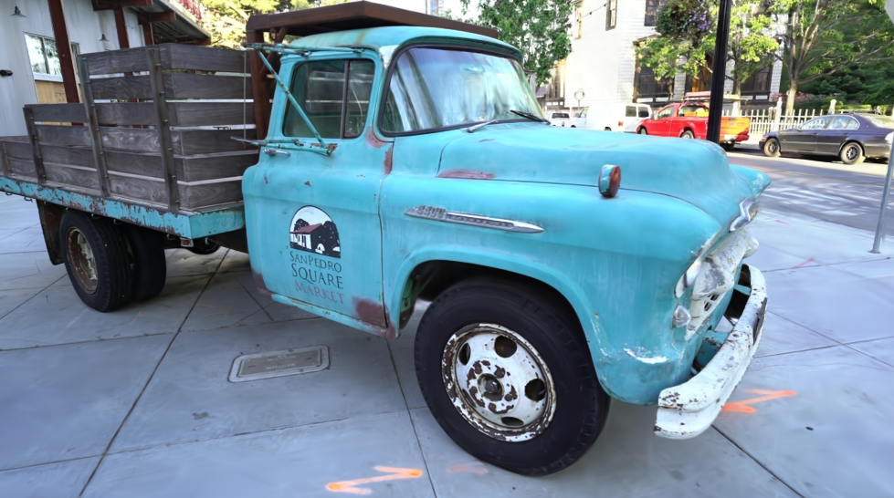
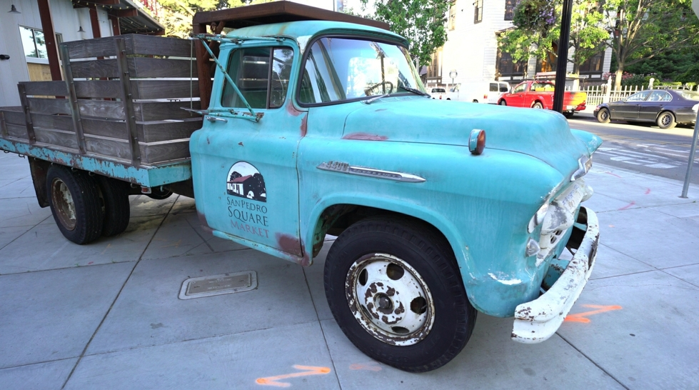

Reveal.js
An html presentation framework I recommend
A design with ❤️ for
SNUPHEL Members
Today:
Session:
Presentation Outline
- Motivation - What is this and why should you care?
- Features - What can this presentation do?
- Problem Statement - A pipeline for full deployment of a fancy presentation
- Approach - Techinical Details
- Result - Out of the box template!
- Contributions - what I have done.
- Discussion - Why is looking fancy important?
Motivation
- Web-based content is flexible and easy to share
- To make use of AI tools in an easier way
- It looks cool.

Reveal.js logo
Limitations of Existing Methods
| Technology | Cost | Resolution | Color/Texture | Computation | Accessibility |
|---|---|---|---|---|---|
| Powerpoint | Low | High | High | Low | High |
| Google Slides | High | High | Low | Medium | Low |
| Notion | Medium | Medium | Medium | Medium | Medium |
| Canvas-like | Low | High | High | Very High | Medium |
| Reveal.js | Low | High | High | Medium | High |
Table 1: Comparison of different 3D reconstruction technologies
Presenter View
- Press S to call up the Presenter View
- Comparison of global vs. local shooting methods
Iframe: a webpage in a webpage(this slide)
- If you want to show a preview(?) of your/others' webpage:
- looking at this code (Woops, another feature~)
<div>
<iframe src="https://3dgs.phasheen.com" width="600" height="500" title="Web Preview"></iframe>
</div>
Customized feature:Before-After Slider


Ground Truth
3DGS
Ground truth VS 3DGS rendered novel view (2023)
Problem Statement
- Plants are inherently three-dimensional; 2D imaging has severe limitations
- High-cost of LiDAR systems limits accessibility
- RGB-D sensors generate low-resolution point cloud data
- Traditional 3D reconstructions lose high-resolution color and texture details
- Neural Radiance Fields (NeRF) faces computational efficiency challenges
- 3D Gaussian Splatting (3DGS) remains underexplored in agriculture
Research Objectives
- Reconstruct high-fidelity 3D Gaussian Splatting (3DGS) models of individual cotton plants
- Compare the performance of foundation model (SAM) and YOLOv11x in obtaining 2D instance masks from RGB images
- Segment bolls in the 3DGS model and cluster segmentation results from multiple views
- Evaluate 3D boll mapping accuracy and extract phenotypic traits
Approach
Creating Your First Reveal.js Presentation
- Install dependencies with
npm install - Start the development server with
npm start - Edit index.html to create your slides
- Use section tags to create new slides
- Nested sections create vertical slides
Basic Slide Structure
- Each slide is a
<section>element - Vertical slides use nested sections
- Use HTML or Markdown for content
- Add notes with
<aside class="notes">
<section>
<h2>Slide Title</h2>
<ul>
<li>Bullet point 1</li>
<li>Bullet point 2</li>
</ul>
<aside class="notes">
Speaker notes here
</aside>
</section>Configuration Options
- Initialize with options:
transition: slide, fade, convex, etc.theme: black, white, league, etc.controls: show/hide navigationprogress: show/hide progress bar
- Override with data attributes:
data-transitiondata-backgrounddata-auto-animate
Reveal.initialize({
controls: true,
progress: true,
center: true,
hash: true,
transition: 'slide',
// More options...
plugins: [ RevealMarkdown, RevealHighlight ]
});Custom Styling
Add your own CSS to customize the appearance:
.reveal h1 {
color: #2a76dd;
font-family: 'Montserrat', sans-serif;
text-transform: none;
}
.reveal .slides {
text-align: left;
}
.reveal .slides section {
padding: 40px;
}Advanced Features
- Animation and Transitions
- Auto-Animate between slides
- Fragment animations for step-by-step reveals
- Multiple transition styles
- Custom slide backgrounds with
data-background
- Interactive Elements
- Code highlighting with line numbers
- Interactive charts with JavaScript
- Embedded iframes for web content
Plugin Showcase
- RevealHighlight for syntax highlighting
- RevealMath for math formulas
- RevealNotes for speaker notes
- RevealZoom for image zooming
Reveal.initialize({
// ...other options
plugins: [
RevealHighlight,
RevealNotes,
RevealMarkdown,
RevealMath.KaTeX,
RevealZoom
]
});Math Formulas with KaTeX
- Include RevealMath.KaTeX plugin
- Write inline math with $\LaTeX$ syntax
- Create complex equations
- Renders faster than MathJax
Example equation:
$$E = mc^2$$
$$\frac{d}{dx}\left( \int_{a}^{x} f(u)\,du\right)=f(x)$$
Einstein's theory of relativity and the Fundamental Theorem of Calculus
Markdown Support
| Feature | HTML | Markdown |
|---|---|---|
| Headers | <h1>...</h1> | # Header |
| Lists | <ul><li>...</li></ul> | * Item |
| Links | <a href="...">...</a> | [text](url) |
| Images | <img src="..." alt="..."> |  |
| Code | <pre><code>...</code></pre> | ```lang code``` |
Write slides in Markdown for faster content creation
<section data-markdown>
<textarea data-template>
# Slide Title
* Bullet point 1
* Bullet point 2
---
## Next Slide
```javascript
let code = "highlighted";
```
</textarea>
</section>Fragment Animations
Fragment Types
- fade-in
- fade-up
- fade-down
- fade-left
- fade-right
Code Example
<ul>
<li class="fragment fade-in">fade-in</li>
<li class="fragment fade-up">fade-up</li>
<li class="fragment fade-down">fade-down</li>
<li class="fragment fade-left">fade-left</li>
<li class="fragment fade-right">fade-right</li>
</ul>Highlight Fragments
The red blue green fragments.
Other Effects
grow
shrink
strike
fade-out
Export & Sharing
- Export to PDF for offline viewing
- Deploy to GitHub Pages for free hosting
- Share links with specific slide hash (#/2/3)
- Include print-pdf query parameter for PDF export
- Use
gulpto create a production build
PDF Export URL:
http://localhost:8000/?print-pdfGitHub Pages Deploy:
git add .
git commit -m "My presentation"
git push origin gh-pagesDon't like this logo? Design your own!
Common Challenges
- Responsive Design:
- Test on different devices and screen sizes
- Use percentage-based dimensions where possible
- Cross-browser compatibility issues
@media screen and (max-width: 768px) {
.reveal h1 { font-size: 1.8em; }
.reveal .slides { padding: 15px; }
.container { flex-direction: column; }
.col { max-width: 100%; }
}Advanced Customization
- Creating custom themes
- Developing your own plugins
- Integrating with other libraries